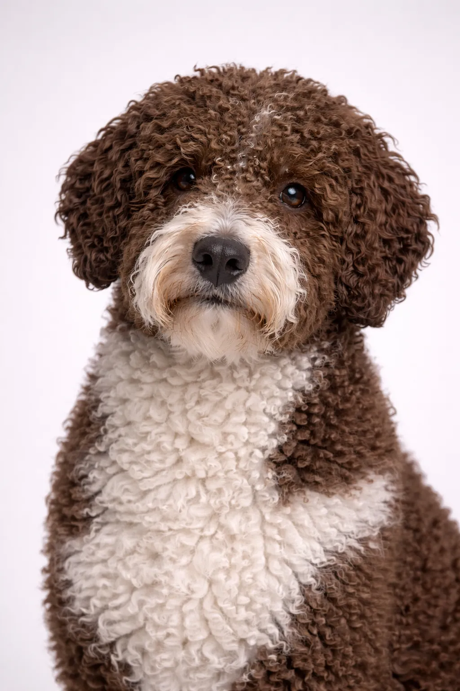

Spanish Water Dog
A versatile Spanish breed used for herding and water retrieval, the Spanish Water Dog has a distinctive curly coat and loyal personality.
Оценки Породы
Темперамент
Обзор
A versatile Spanish breed used for herding and water retrieval, the Spanish Water Dog has a distinctive curly coat and loyal personality.
Темперамент
The Spanish Water Dog is known for being diligent, affectionate, loyal. They're excellent with children and make wonderful family pets. Their intelligence and eagerness to please make training enjoyable. Early socialization helps them develop into well-rounded companions.
Здоровье
Generally healthy with a lifespan of 12-14 лет. Common concerns include joint problems. Regular veterinary checkups and preventive care are important. Maintaining a healthy weight helps prevent many health issues.
Физическая Активность
High energy breed requiring vigorous daily exercise—at least an hour of activity. They thrive with active families who enjoy outdoor activities. Mental stimulation through training and puzzle toys is equally important. Without adequate exercise, they may develop behavioral issues.
⦿ Подходит Ли Вам Эта Порода?
✓ Лучше Всего Для
- Active families
- Water enthusiasts
- Аллергики
✗ Не Подходит Для
- Those wanting a fluffy-looking dog
- Sedentary owners
Наш Вердикт: A versatile Spanish breed used for herding and water retrieval, the Spanish Water Dog has a distinctive curly coat and loyal personality.